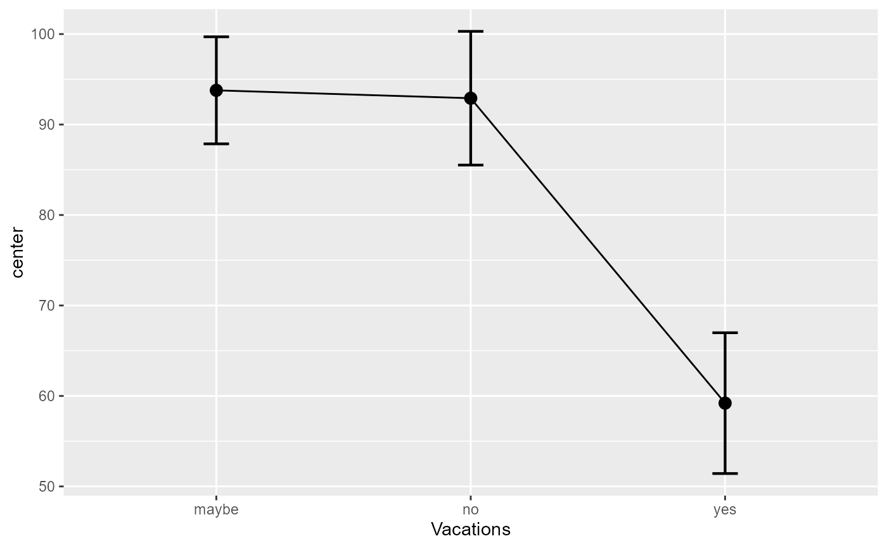
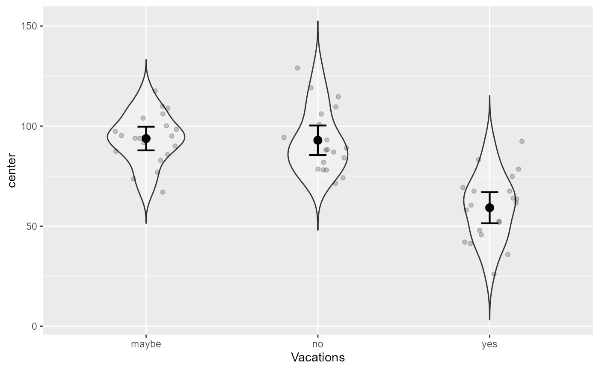
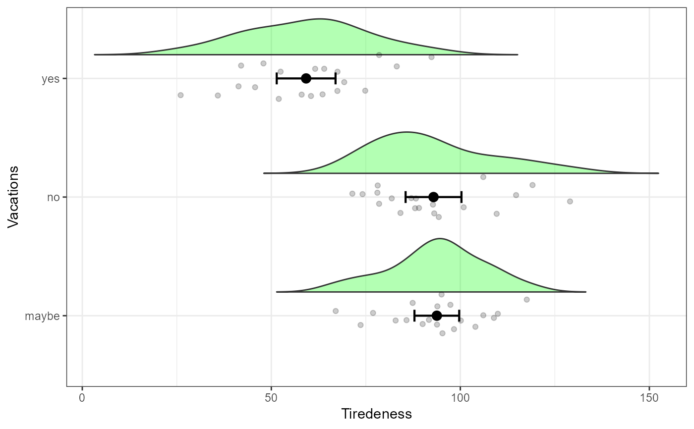
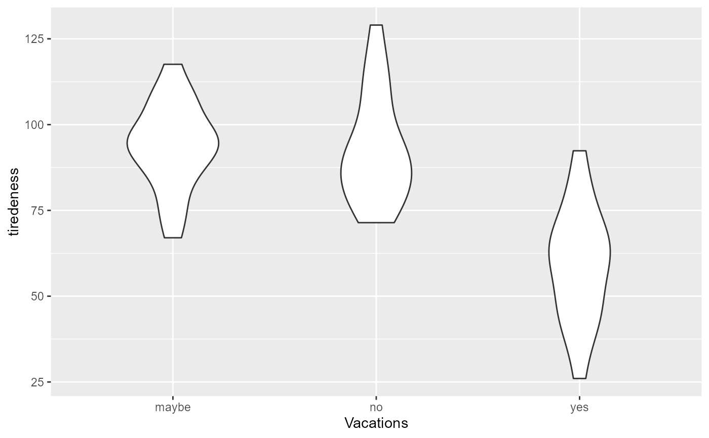
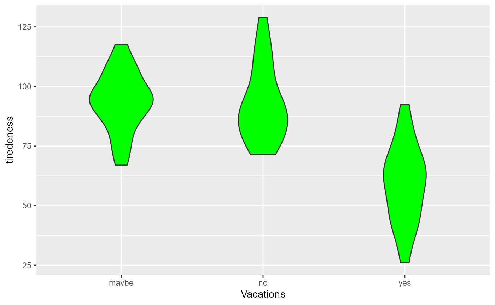
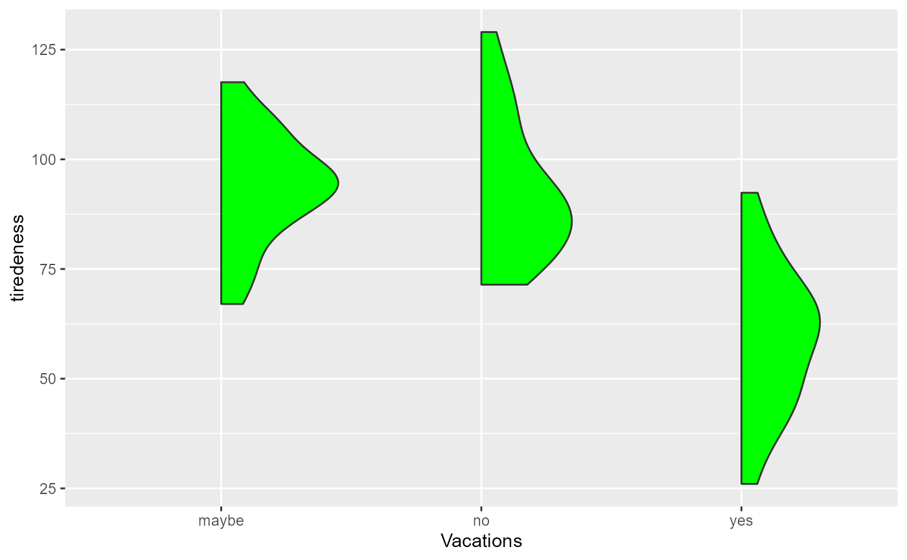
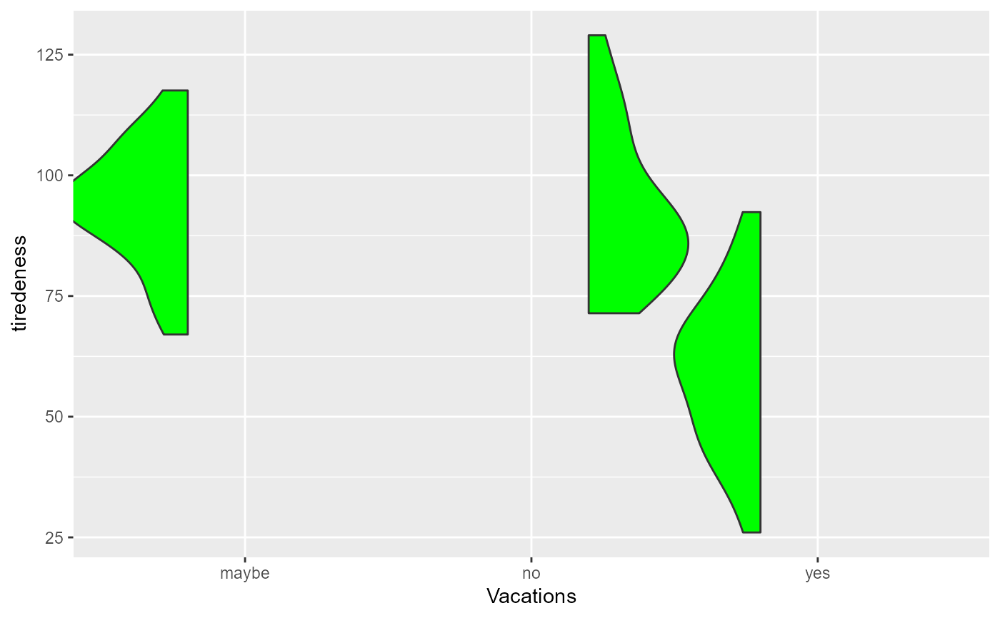

geom_flat_violin() is a geom for ggplots; it is based on
the original script to create raincloud plots.
It relies largely on code previously written by David Robinson
(https://gist.github.com/dgrtwo/eb7750e74997891d7c20)
and the package ggplot2 by Hadley Wickham.
Code from Allen et al. (2019)
It is expanded in tow different ways. First, it is possible to
decide the direction of the violin using the direction argument
(values are 0 = symmetrical; 1 = extending to the right; -1 = extending
to the left); the last two cases are "half"-violin. The second
argument is push which pushed the violin away from the median line (default = 0).
geom_flat_violin(
mapping = NULL,
data = NULL,
stat = "ydensity",
position = "dodge",
trim = TRUE,
scale = "area",
show.legend = NA,
inherit.aes = TRUE,
...
)(as usual) see geom_violin()
(as usual) see geom_violin()
(as usual) see geom_violin()
(as usual) see geom_violin()
If TRUE (default), trim the tails of the violins
to the range of the data. If FALSE, don't trim the tails.
if "area" (default), all violins have the same area (before trimming the tails). If "count", areas are scaled proportionally to the number of observations. If "width", all violins have the same maximum width.
(as usual) see geom_violin()
(as usual) see geom_violin()
all additional parameters are sent to the underlying geom_path(). It includes
direction (NEW) either -1,0, or +1;
push (NEW) a positive number.
na.rm (as usual) see geom_violin()
orientation (as usual) see geom_violin()
a layer containing violins in a ggplot object
Allen M, Poggiali D, Whitaker K, Marshall TR, van Langen J, Kievit RA (2019). “Raincloud plots: a multi-platform tool for robust data visualization.” Wellcome open research, 4.
library(superb) # to import the geom_flat_violin
library(ggplot2)
# let's have a fake data frame with three groups:
dta <- dta <- GRD( SubjectsPerGroup = 20,
BSFactors = "Vacations(yes,no,maybe)",
RenameDV = "tiredeness",
Population = list(mean=75, stddev=15),
Effects = list("Vacations" = custom(-20,+20,+10))
)
# The most basic plot = a regular error bar
superb( tiredeness ~ Vacations, dta)

# an example with default violins
superb( tiredeness ~ Vacations, dta,
plotStyle = "pointjitterviolin" )

# the same with some ornementations:
superb( tiredeness ~ Vacations, dta,
plotStyle = "pointjitterviolin",
violinParams = list(direction = 1, push = 0.2, fill="green", alpha = 0.3)
) + theme_bw() + coord_flip() + ylab("Tiredeness")

# This new geom is integrated inside superb() so that you can use it
# directly. Let's see examples:
# show the violins only
ggplot(dta, aes(y = tiredeness, x = Vacations ) ) +
geom_flat_violin()

# change the parameters of the violins
ggplot(dta, aes(y = tiredeness, x = Vacations ) ) +
geom_flat_violin( fill = "green")

# all the arguments manipulated
ggplot(dta, aes(y = tiredeness, x = Vacations ) ) +
geom_flat_violin( fill = "green", direction = 1, push =0.)

# using direction within aes
dta <- transform(dta, dir = ifelse(Vacations == "no", 1, -1))
ggplot(dta, aes(y = tiredeness, x = Vacations, direction = dir ) ) +
geom_flat_violin( fill = "green", push =0.)
